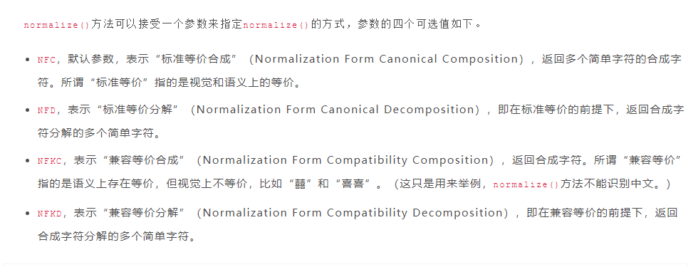

现象如下:
1 | from werkzeug.utils import secure_filename |
查看源码如下:
1 | import os, sys, re |
问题出在这一句filename = normalize('NFKD', filename).encode('ascii', 'ignore')的encode('ascii', 'ignore')上,
我们知道, python中对字符串的encode方法对于错误的处理有几种方法:
1 | class str(object): |
具体效果如下:
1 | "迟迟不吃饭1232233.png".encode('ascii', 'strict') |
解决方案
上传一张图片的时候, 例如一个名字是/haha/pp/ll.jpg, 那么是查找11.jpg还是/haha/pp目录下的11.jpg
1 | import re |
对于一些业务中会有很多图片需要保留原名称但是不同人上传的名称可能一样的, 可以保存为下面的结构体:
1 | struct Img { |
其他
normalize
Return the normal form 'form' for the Unicode string unistr.
Valid values for form are 'NFC', 'NFKC', 'NFD', and 'NFKD'.
